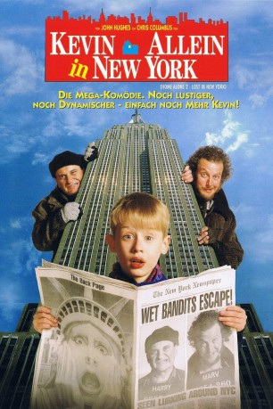

#7766 Kevin - Allein in New York
Alternativ: Home Alone 2: Lost in New York
 
 IMDB-Wertung: 6.6 / 10
IMDB-Wertung: 6.6 / 10  Metascore: 0
Metascore: 0 
Und wieder ist Weihnachten bei der Familie McCallister, wieder ist Ferienstimmung angesagt – diesmal soll’s ins sonnige Florida gehen. Aus den Erfahrungen des chaotischen letzten Jahres hat man gelernt; diesmal kann alles verlorengehen – wenn nur Kevin mit am Flughafen ist. Doch es kommt, wie es kommen muß: Die Familie sitzt in der Maschine nach Florida und Kevin gerät auf den Flieger in die Stadt mit der Statue. Das ist ein Heidenspaß für den liebenswerten frechen Bengel, denn New York ist eben immer noch DIE Stadt überhaupt. Eine schöne Bescherung für den kleinen Kevin – wenn da nicht die “nassen Banditen” wären, die ausgerechnet zur gleichen Zeit ihr unfreiwilliges Zuhause verlassen haben, um in der Stadt der Städte ihr neues, fieses Glück zu suchen. Und die beiden sind noch immer mächtig sauer auf den gewitzten Jungen aus Chicago.
Jahr: 1992
Dauer: 120 Minuten
FSK: 12
Land: USA Studio: Twentieth Century FoxTonspuren:
Untertitel: Deutsch,
Auflösung: 1080p (1920x1040) Größe: 9000 MB
Genre: Komödie, Abenteuer, Familie
Regisseur:  Chris Columbus
Chris Columbus
Drehbuch: John Hughes
Soundtrack: John Williams
Darsteller:
 Macaulay Culkin als Kevin McCallister
Macaulay Culkin als Kevin McCallister Joe Pesci als Harry Lime
Joe Pesci als Harry Lime Daniel Stern als Marv Merchants
Daniel Stern als Marv Merchants Catherine O'Hara als Kate McCallister
Catherine O'Hara als Kate McCallister John Heard als Peter McCallister
John Heard als Peter McCallister Devin Ratray als Buzz McCallister
Devin Ratray als Buzz McCallister- Michael C. Maronna als Jeff McCallister
 Gerry Bamman als Uncle Frank McCallister
Gerry Bamman als Uncle Frank McCallister- Terrie Snell als Aunt Leslie McCallister
- Senta Moses Mikan als Tracy McCallister
- Diana Rein als Sondra McCallister
 Kieran Culkin als Fuller McCallister
Kieran Culkin als Fuller McCallister Tim Curry als Concierge
Tim Curry als Concierge Brenda Fricker als Pigeon Lady
Brenda Fricker als Pigeon Lady- Eddie Bracken als E.F. Duncan
 Dana Ivey als Desk Clerk
Dana Ivey als Desk Clerk Rob Schneider als Bellman
Rob Schneider als Bellman- Leigh Zimmerman als Fashion Model
- Bob Eubanks als Ding-Dang-Dong Host
 Rip Taylor als Celeb #1
Rip Taylor als Celeb #1- Jaye P. Morgan als Celeb #2
- Jimmie Walker als Celeb #3
 Ally Sheedy als NY Ticket Agent
Ally Sheedy als NY Ticket Agent Clarke Devereux als Ticket Taker
Clarke Devereux als Ticket Taker- Sandra Macat als Flight Attendant
- Rod Sell als Officer Bennett
 Ron Canada als Cop in Times Square
Ron Canada als Cop in Times Square Mark Morettini als Arresting Cop in Central Park #2
Mark Morettini als Arresting Cop in Central Park #2- Donald J. Trump als Donald Trump
- Abdoulaye NGom als Bead Necklace Vendor
- Anthony Cannata als Sergeant in Toy Store
 Al Cerullo als Helicopter Pilot
Al Cerullo als Helicopter Pilot- Laurence S. Chess als Parent at Christmas play (uncredited)
- Chris Columbus als Man in Toy Store (uncredited)
- Jonathon Gentry als Choir Boy (uncredited)
 Eric Ian als Kid in the Airport (uncredited)
Eric Ian als Kid in the Airport (uncredited) Eden Riegel als Choir Member (uncredited)
Eden Riegel als Choir Member (uncredited)- Mike Sode als Airport College Student (uncredited)
- Hillary Wolf als Megan McCallister
- Maureen Elisabeth Shay als Linnie McCallister
- Jedidiah Cohen als Rod McCallister
- Anna Slotky als Brooke McCallister
- Ralph Foody als Gangster
- Clare Hoak als Girl Gangster on TV
- Monica Devereux als Hotel Operator
- Patricia Devereux als Contestant #1
- Aimee Devereux als Contestant #2
- A.M. Columbus als Skycap O'Hare #1
- Joe Liss als Skycap O'Hare #2
- Teri McEvoy als Agent #3 - NY Gate / O'Hare
Datei: X:\3-Trilogie(G-M)\Kevin Allein\Kevin - Allein in New York (1992, FSK12, 1920x1040).mkv seit 15.12.2017
Festplatte: HD Collection-2(A-Z)-3(A-M)
 Alle Filme aus Gruppe '3-Trilogie(G-M)\Kevin Allein'
Alle Filme aus Gruppe '3-Trilogie(G-M)\Kevin Allein'